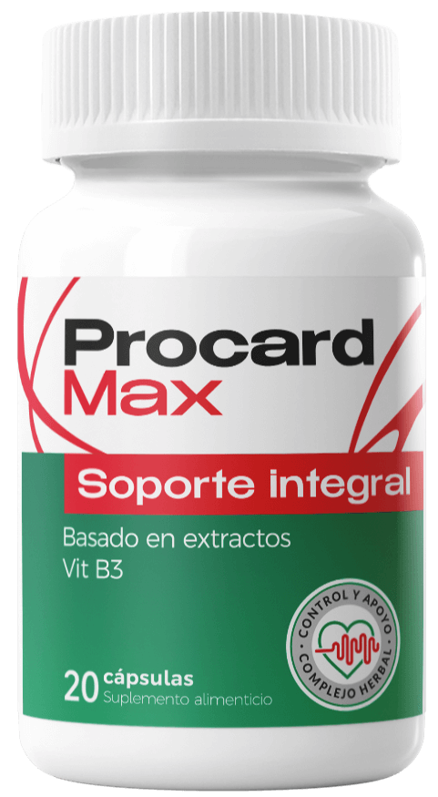

Procard Max: La clave natural para una presión arterial saludable y limpieza vascular
Descubre cómo estas cápsulas con extractos bioactivos ayudan a estabilizar la tensión arterial, regular el ritmo cardíaco normal y proteger la elasticidad de los vasos sanguíneos después de los 35 años.
- Estabilización natural: Apoya el control fisiológico de la presión arterial sin cambios bruscos.
- Limpieza vascular profunda: Contribuye a liberar las paredes arteriales de depósitos de colesterol y toxinas.
- Protección del músculo cardíaco: Favorece la oxigenación celular, reduce la fatiga crónica y mejora el descanso nocturno.
- Fórmula sinérgica en cápsulas: Ingredientes herbales estandarizados de alta biodisponibilidad para adultos mayores de 35 años.

¡La presión arterial descontrolada afecta a millones de personas cada año!
A nivel mundial y en todo México, los problemas cardiovasculares derivados de la tensión arterial alta superan ampliamente a otras afecciones cotidianas, convirtiéndose en un desafío crítico a partir de los 35 años.
Muchas personas asumen que el cansancio al despertar, los zumbidos en los oídos o los dolores de cabeza vespertinos son simples consecuencias del estrés o de la edad. Sin embargo, cuando las paredes de las arterias pierden su flexibilidad natural y acumulan lípidos, el corazón se ve obligado a bombear con un esfuerzo excesivo las 24 horas del día.
Por ello, el enfoque nutricional moderno no se limita a enmascarar las molestias momentáneas, sino que busca restaurar la tonicidad vascular desde el interior mediante compuestos naturales como los presentes en Procard Max.
La hipertensión es un enemigo silencioso: señales que no debes ignorar
Si tienes más de 35 años y experimentas al menos dos de los siguientes síntomas con regularidad, tu sistema cardiovascular puede estar solicitando apoyo urgente:
¿Por qué actuar a tiempo marca la diferencia?
Cuando la tensión arterial permanece elevada o sufre picos constantes, los microvasos que irrigan órganos vitales sufren un desgaste acelerado:
- Sobrecarga continua sobre el músculo cardíaco.
- Pérdida de elasticidad y estrechamiento de las paredes arteriales.
- Disminución del flujo de oxígeno hacia el cerebro y las extremidades.
- Mayor vulnerabilidad frente a cambios climáticos o episodios de estrés emocional.
¡Cuidar tus arterias hoy es la mejor inversión para tu tranquilidad y la de tu familia!
¿Por qué la limpieza vascular es vital para estabilizar la tensión arterial?
Las cápsulas Procard Max cuentan con una composición natural diseñada para estabilizar la tensión arterial, regular el ritmo cardíaco y limpiar los vasos sanguíneos en tres frentes clave:
Equilibrio de Lípidos y Colesterol
Con el paso de los años, las partículas lipídicas se adhieren a las paredes internas de los vasos sanguíneos, reduciendo el diámetro por donde circula la sangre. Procard Max ayuda a mantener las arterias despejadas y saludables.
Fluidez Sanguínea y Microcirculación
Una sangre demasiado densa dificulta el transporte de nutrientes y oxígeno. Los antioxidantes naturales de la fórmula favorecen una circulación fluida y previenen el estancamiento capilar.
Relajación y Elasticidad Arterial
El estrés oxidativo y la tensión nerviosa contraen las paredes vasculares (vasoespasmo). Procard Max promueve la relajación suave del endotelio vascular, ayudando a mantener lecturas estables.
A diferencia de las soluciones sintéticas agresivas que provocan caídas bruscas de presión acompañadas de somnolencia, Procard Max actúa de manera gradual y fisiológica, respetando el biorritmo natural del organismo adulto.
La eficacia de Procard Max radica en su composición natural
Un complejo herbal y nutricional con efecto sinérgico donde cada extracto potencia la absorción y el beneficio protector de los demás componentes:
Extractos Botánicos Vasodilatadores
Ricos en flavonoides y polifenoles bioactivos que ayudan a relajar la musculatura lisa de las arterias, reduciendo la resistencia vascular periférica y favoreciendo una presión arterial equilibrada.
Complejo Cardioprotector y Antioxidante
Neutraliza los radicales libres que dañan el tejido endotelial, fortalece el tono del músculo cardíaco y ayuda a normalizar la frecuencia de los latidos durante situaciones de estrés físico o mental.
Fitoesteroles de Limpieza Vascular
Contribuyen al metabolismo saludable del colesterol y los triglicéridos, evitando la formación de depósitos en las paredes arteriales y mejorando la elasticidad de los vasos sanguíneos.
Micronutrientes y Vitaminas Esenciales
Apoyan la transmisión nerviosa normal, reducen la fatiga crónica, mejoran la calidad del sueño reparador y disminuyen la irritabilidad asociada a las fluctuaciones de tensión.
Indicadores de bienestar reportados con el uso de Procard Max
Las evaluaciones de satisfacción y seguimiento en usuarios mayores de 35 años que incorporaron las cápsulas Procard Max junto con hábitos saludables reflejan mejoras notables en su calidad de vida:
Estabilidad Tensional
Menor incidencia de fluctuaciones bruscas asociadas a cambios de clima o jornadas de estrés.
Tono y Ritmo Cardíaco
Mayor sensación de calma, reducción de palpitaciones nocturnas y mejor oxigenación diaria.
Vitalidad y Bienestar
Disminución de la pesadez matutina, dolores de cabeza tensionales y fatiga acumulada.
Ficha Técnica del Producto
| Nombre del Producto | Procard Max |
|---|---|
| Formato de Presentación | Frasco de cápsulas de origen natural de fácil ingesta |
| Público Objetivo | Adultos mayores de 35 años (35+) |
| Precio Oficial en México | 590 MXN (Precio promocional con 50% de descuento; regular 1,180 MXN) |
| Modalidad de Pago | Pago contra entrega (pagas en efectivo al recibir el producto en tus manos) |
¿Cómo tomar las cápsulas Procard Max correctamente?
Para obtener el máximo beneficio de su fórmula natural, la constancia diaria es la clave principal:
Paso 1: Dosis Diaria
Toma las cápsulas diariamente siguiendo la recomendación impresa en el envase original del producto.
Paso 2: Hidratación
Ingiere cada toma acompañada de un vaso grande de agua pura para facilitar la disolución y absorción de los extractos.
Paso 3: Curso Completo
No interrumpas el curso antes de tiempo; el efecto sinérgico de los ingredientes naturales trabaja de forma acumulativa semana tras semana.
Comentarios de personas que se han beneficiado de Procard Max
Conoce las experiencias de usuarios en México que ya integraron Procard Max en su rutina de cuidado diario:
"Después de cumplir 48 años empecé a notar mareos frecuentes y picos de tensión por el estrés laboral. Llevo tomando las cápsulas Procard Max durante un mes y medio y mi presión se mantiene estable, duermo mejor y ya no siento esa pesadez en la nuca."
"Me dio mucha confianza poder pagar en efectivo al recibir el paquete en mi domicilio. Las cápsulas son muy suaves con el estómago y en pocas semanas noté menos fatiga, menos zumbido en los oídos y mucha más vitalidad para caminar por las mañanas."
"Lo pedí para mí y para mi esposa porque ambos pasábamos de los 50 años y sufríamos con los cambios de clima. La atención telefónica fue muy amable, nos explicaron todo el curso y el descuento de 590 pesos vale totalmente la pena."
¿Cómo pedir Procard Max Original en México con 50% de Descuento?
Para proteger a los consumidores contra imitaciones y sobrecostos de intermediarios, Procard Max no se comercializa en farmacias tradicionales. El proceso directo consta de 4 sencillos pasos:
Solicitud en Línea
Haz clic en el botón oficial y deja tu nombre y número telefónico en el formulario seguro.
Atención 24/7
Un especialista se comunicará contigo por teléfono para confirmar tus datos de entrega y resolver tus dudas.
Envío Discreto
Tu pedido se despacha rápidamente hacia tu domicilio cuidadosamente empacado.
Pago al Recibir
No necesitas tarjeta bancaria: pagas los 590 MXN únicamente cuando recibes el paquete.
Este producto está formulado estrictamente para adultos mayores de 35 años. El servicio de envío directo con pago contra entrega está disponible en la República Mexicana, con excepción de los estados de Baja California, Baja California Sur, Tabasco, Quintana Roo, Chiapas, Guerrero y Puebla, donde actualmente no se procesan solicitudes por cobertura de mensajería contra reembolso. Además, cuentas con soporte de atención 24/7 y un plazo de hasta 120 horas (5 días) tras tu solicitud para cualquier modificación o cancelación directa con la central.
Preguntas Frecuentes sobre Procard Max
Resolvemos las dudas más habituales antes de realizar tu pedido en México:
¿Qué es Procard Max y para qué sirve?
Procard Max es un suplemento alimenticio en cápsulas con ingredientes de origen natural diseñado para personas mayores de 35 años. Su función principal es apoyar el equilibrio de la presión arterial, promover la limpieza de los vasos sanguíneos y fortalecer el funcionamiento saludable del sistema cardiovascular.
¿Cuál es el precio oficial de Procard Max en México?
Actualmente puedes adquirir Procard Max por un precio promocional de 590 MXN gracias al descuento vigente del 50% (su precio habitual sin promoción es de 1,180 MXN).
¿Por qué no se encuentra en farmacias tradicionales?
El fabricante distribuye Procard Max directamente al consumidor a través de su página web oficial para evitar márgenes comerciales excesivos de distribuidores y garantizar que recibas el lote original con pago contra entrega.
¿Tiene efectos secundarios o contraindicaciones?
Gracias a su composición basada en extractos naturales, las cápsulas son bien toleradas por el organismo adulto. No obstante, está destinado exclusivamente a mayores de 35 años y no se recomienda en mujeres embarazadas, en periodo de lactancia o personas con hipersensibilidad individual a alguno de los componentes de la fórmula.
¿A qué estados de México realizan entregas?
Se realizan envíos a domicilio con pago contra entrega en la mayor parte de México, excepto en las regiones de Baja California, Baja California Sur, Tabasco, Quintana Roo, Chiapas, Guerrero y Puebla.